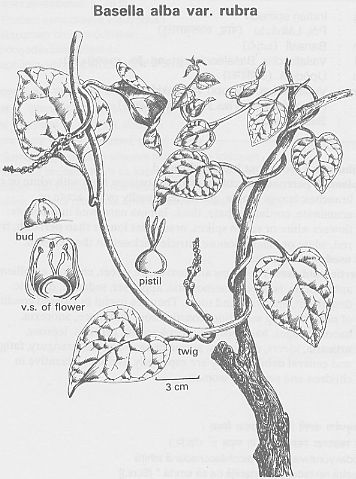

|
ECONOMICALLY
IMPORTANT PLANTS OF INDIA |
| Under-utilized Food and Fodder species and their wild relatives | Contributed by Ms.M.L Annapurna And Dr. Dhanapal, UAS, Bangalore |
Basella alba (L.)
Taxonomic Details

----- Correct Name
----- Classification
----- Synonyms
----- Common Names
Other Biological Details
----- Habit and Habitat
----- Diagnostic Features
----- Reproductive Biology
---------- Breeding System
---------- Phenology
---------- Seed Biology
----------Seed germination
---------Propagation
------Cultivation
----- Major
Pests and Diseases
Economic Potential and Uses
----- Parts Used
-----Uses
----- Harvesting Practices
----- Produce and Products
----- Chemistry
----- Processing Techniques
----- Other uses
----- Economic Potential to the Country
----- Export Potential
Miscellaneous Information
Literature
HABIT & HABITAT
Perennial climbing herb, cultivated in gardens sometimes found wild. Found in
China, Gandola, India(Santal);, Java, Malaya.
Habitat: Cultivated fields and Plains, Garden,
Roadside hedges, Thickets, villages,
BioticZone: Tropics,
Misc: Choutkoor, Mombojipally, Sankra,
Country: India,
Zone: Central, South,West,
State: Andhra Pradesh, Bihar, Goa Daman Diu, Madhya Pradesh, Tamil Nadu,
District: Champaran, Damoh, Indore, Medak, Pulni, Raigarh, Raipur, Sidhi,
Availability
:
Status :
DIAGNOSTIC
FEATURES
A glabrous much branched , fleshy perennial herb; leaves alternate,
entire, broad ovate, cordate, acute, glossy and subsucculent; perianth fleshy,
5-lobed; utricle red turning black, ovoid; fruit enclosed in the perianth. Flowers are pinkish or pale purple, sessile, in lax, axillary peduncled spikes.
Peduncles are often thickened. Flowers remain closed.
REPRODUCTIVE BIOLOGY
Breeding System :
Phenology:
Flowering
and fruiting occurs in Sep-Feb.
Seed Biology:
Seed Germination :
Seed - sow March or April in a warm greenhouse. The seed requires
a minimum temperature of 18 - 21°c in order to germinate, it germinates
within 10 - 21 days at 20°c, pre-soaking the seed for 24 hours in warm water
shortens the germination time. As soon as they are large enough to handle,
prick the seedlings out into individual pots of fairly rich compost and grow
them on fast, planting them out after the last expected frosts. Stem cuttings.
These can be taken in the late summer, over wintered in a greenhouse and then
be planted out in late spring or early summer.
Cultivation:
Requires a well-drained moisture-retentive soil
rich in organic matter and a warm sunny sheltered position. Prefers a sandy
loam. Tolerates fairly poor soils but does much better in rich soils.
Tolerates high rainfall. Tolerates a pH in the range 4.3 to 7.
A frost-tender perennial, it is not hardy outdoors
in Britain but can be grown as a spring-sown annual. A fast growing plant,
capable of producing a crop within 70 days from seed in a warm climate, though it requires a minimum daytime temperature of 15°c if it is
to keep growing vigorously so it seldom does well outdoors in Britain.
It does tolerate low light levels plus night temperatures occasionally falling
below 10°c, and so can do well in a cold greenhouse. Plants do not
flower if the length of daylight is more than 13 hours per day. Widely
cultivated for its edible leaves in the tropics, there are some named
varieties.
It is an excellent hot weather substitute for spinach. Some
authorities recognize three different species, B. alba, B. rubra and B.
cordifolia,
they are all treated here as being part of one species.
Harvesting
Practices and yeild:
Parts used
Leaves, stem tips and Fruits.
2.Leaves and stem tips - raw or cooked. A pleasant mild spinach flavour , the leaves can be used as a spinach or added to salads. Do not overcook the leaves or they will become slimy.
3.The mucilaginous qualities of the plant make it an excellent thickening agent in soups, stews etc where it can be used as a substitute for okra, Abelmoschatus esculentus.
4.An infusion of the leaves is a tea substitute.
5.The purplish sap from the fruit is used as a food colouring in pastries and sweets. The colour is enhanced by adding some lemon juice.
Produce and Products
Chemistry
Leaves (Dry weight)
In grammes per 100g weight of food:
Water: 0 Calories: 275 Protein: 20 Fat: 3.5 Carbohydrate: 54 Fibre: 9 Ash: 19
In milligrammes per 100g weight of food:
Calcium: 3000 VitaminA: 50 Thiamine: 0.7 Riboflavin: 1.8 Niacin: 7.5 VitaminC:
1200
2.Astringent - the cooked roots are used in the treatment of diarrhoea.
3.Laxative - the cooked leaves and stems are used.
4.The flowers are used as an antidote to poisons.
5.The plant is febrifuge, its juice is a safe aperient for pregnant women and a decoction has been used to alleviate labour.
6.The leaf juice is a demulcent, used in cases of
dysentery. It is also diuretic, febrifuge and laxative.
Economic Potential To The Country
2.Data (http://www.csdl.tamu.edu/FLORA/cgi/ruled_)
3.Details of Scandanavian and European Common names in Henriette's names database
4.Duke. J. A. and Ayensu. E. S. Medicinal Plants of China Reference Publications, Inc. 1985 ISBN 0-917256-20-4
5.Ethnobotany Data (common names, uses, countries) from the Ethnobotany Database (sadly ftp only. The searchable web pages have been pulled).
6.Ethnobotany Data(ftp://genome.cornell.edu/pbu/ethnobotDB)
7.Links, Photos, Suppliers from Hortiplex Plant Database
8.http;//gmr.landfood.unimelb.edu.au/plantnames/sorting/Basella.html) From Multilingual Multiscript Plant Name Database(
9.http;//gmr.landfood.unimelb.edu.au/plantnames/sorting/Basella.html)by M. H. Porcher et. al. 1995 - 2000 Landcare Systems Research Laboratory, Department of Crop Production,Institute of Land and Food Resources, The University of Melbourne, Australia.
10.http;//www.ibiblio.org/herbmed/database.html)names database
11.Huxley. A. The New RHS Dictionary of Gardening. 1992. MacMillan Press 1992 ISBN 0-333-47494-5
12.Islands(http://www.csdl.tamu.edu/FLORA/b98/check98.htm).
13.Ken Fern, Notes from observations, tasting etc at Plants For A Future and on field trips.Facciola. S. Cornucopia - A Source Book of Edible Plants. Kampong Publications 1990 ISBN 0-9628087-0-9
14.Larkcom J. Oriental Vegetables John Murray 1991 ISBN 0-7195-4781-4
Well written and very informative.
15.Oommachan, M. (1977).The Flora of Bhopal (Angiosperms). J.K.Jain Brothers, Bhopal. P: 329-330.
16.Phillips. R. & Rix. M. Vegetables Macmillan Reference Books, London. 1995 ISBN 0 333 62640 0